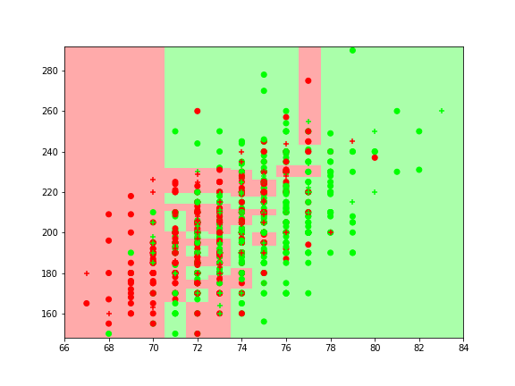
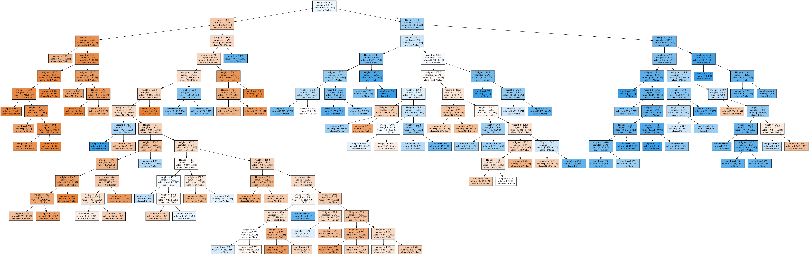

Section 14.2 Classification Tree
We can use the same idea for classification. We will choose the value or class of a leaf to the be the majority of its members in the training data. We split nodes that will improve the percentage of the training data that is being correctly classified.
# Read in the major league players data set
major = pa.read_csv('Data Sets/Major League Height-Weight.csv') # creates a pandas Dataframe from a .csv file
major = major.rename({'Height(inches)':'Height', 'Weight(pounds)':'Weight'}, axis=1)
major = major.drop(640, axis=0)
# We are going to make a dictionary of key:value pairs to recode the Position feature to
# 'Pitcher' and 'Not Pitcher'
pos_dict = {x:1 for x in list(set(major.Position)) if 'Pitcher' in x}
pos_dict2 = {x:0 for x in list(set(major.Position)) if not 'Pitcher' in x}
# Using dictionary comprehensions
pos_dict.update(pos_dict2) # merge the two dictionaries
major_2 = major.copy() # pandas.dataframe is a mutable object so we use the .copy() command
# otherwise changes to major_2 will change major
major_2.Position = major_2.Position.map(pos_dict) # use the dictionary we made to recode the values with .map()
major_2.head()
Name Team Position Height Weight Age
0 Adam_Donachie BAL 0 74 180.0 22.99
1 Paul_Bako BAL 0 74 215.0 34.69
2 Ramon_Hernandez BAL 0 72 210.0 30.78
3 Kevin_Millar BAL 0 72 210.0 35.43
4 Chris_Gomez BAL 0 73 188.0 35.71
# A bit of code for plotting the decision boundaries in a categorical problem with two predictors and two values for the result
# Also prints out the training and testing errors
def plot_cat_model(clf, X, y):
# We shuffle the data using a random permutation
n = X.shape[0]
test = int(0.20*n) # We will use a test set made up of 20% of the data from our sample
perm = rn.permutation(n)
X = X[perm]
y = y[perm]
X_test = X[:test] # Then create the test
y_test = y[:test]
X_train = X[test:] # and train sets
y_train = y[test:]
clf.fit(X_train, y_train) # Fit the model
nn = 200
# Plot the decision boundary. For that, we will assign a color to each
# point in the mesh [x_min, m_max]x[y_min, y_max].
x_min, x_max = X[:, 0].min() - 1, X[:, 0].max() + 1
y_min, y_max = X[:, 1].min() - 2, X[:, 1].max() + 2
xx, yy = np.meshgrid(np.linspace(x_min, x_max, nn),
np.linspace(y_min, y_max, nn))
Z = clf.predict(np.c_[xx.ravel(), yy.ravel()])
# Put the result into a color plot
Z = Z.reshape(xx.shape)
plt.figure(figsize=(8, 6))
cmap_light = pltco.ListedColormap(['#FFAAAA', '#AAFFAA'])
cmap_bold = pltco.ListedColormap(['#FF0000', '#00FF00'])
plt.pcolormesh(xx, yy, Z, cmap=cmap_light);
plt.scatter(X_train[:, 0], X_train[:, 1], c=y_train, cmap=cmap_bold,marker='o')
plt.scatter(X_test[:, 0], X_test[:, 1], c=y_test, cmap=cmap_bold, marker='+');
print('Training Error: {}'.format(clf.score(X_train, y_train)))
print('Testing Error: {}'.format(clf.score(X_test, y_test)))
X = np.array(major_2[['Height', 'Weight']]) y = np.array(major_2['Position'])
import matplotlib.colors as pltco from sklearn.tree import DecisionTreeClassifier
tree = DecisionTreeClassifier(min_samples_leaf=5)
plot_cat_model(tree, X, y)
plt.savefig('14.6.png')
Training Error: 0.7291414752116082
Testing Error: 0.616504854368932

export_graphviz(tree, out_file='tree-2.dot', class_names = ['Not Pitcher', 'Pitcher'], feature_names=['Height', 'weight'],
impurity=False, proportion=True, filled=True)
with open('tree-2.dot') as f:
dot_graph = f.read()
display( graphviz.Source(dot_graph) )
